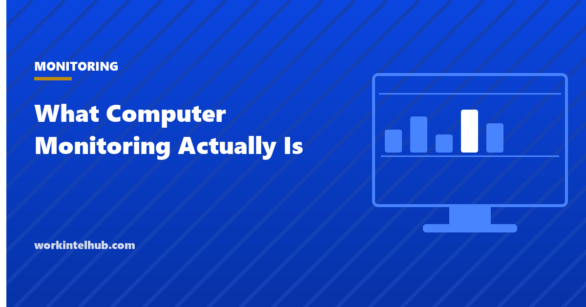

What Computer Monitoring Actually Is, and How It Works

Computer monitoring is software that records how a work computer is used and reports that record back to the employer, normally through an agent installed on the device itself. Monitoring a computer in a workplace is not one technology. It is at least four, and they capture different data, answer different questions, and carry different legal weight. Almost every page that ranks for this topic skips the mechanism and goes straight to a product list. We are going to do the opposite, because the mechanism is what decides whether the data you get back means anything.
We do not sell monitoring software and we take no commission from anyone who does. That lets us say the thing a review site funded by referral fees cannot: a large share of the people researching this should not buy anything, and the ones who should have several decisions to make before a tool becomes relevant at all. So there are no product names below, no pricing, and no claims about features we have not personally verified, which is all of them.
If you read one section, read the one on what gets captured. The gap between what people imagine and what these tools actually record runs in both directions.
What computer monitoring is, in plain terms
Computer monitoring is the deliberate collection of a usage record from a work machine, kept somewhere the employer can query it later. Three places produce that record. The endpoint, meaning the laptop or desktop itself, running a small program that watches the operating system. The network, meaning a gateway, proxy, or DNS resolver that sees traffic leaving the building or the corporate tunnel. And the cloud services themselves, which already write logs of sign-ins, file access, and message sending whether or not anyone bought a monitoring tool.
That third source surprises people. Most organizations already hold a lot of activity data in their identity provider, email platform, and document storage. Ask whether your question can be answered from logs you already own, under retention rules you already wrote. Quite often it can, and the honest recommendation is to stop there.
The word monitoring also drags in a reputation it partly deserves. Consumer spyware, stalkerware, and covert keystroke capture use similar mechanics with none of the governance, and that association is why any workplace deployment has to be loud rather than quiet. We keep a separate page on the categories of data that employee monitoring should refuse to collect under any justification, because drawing that line first makes every later decision easier.
How monitoring a computer works at the operating system level
An endpoint agent is a background service that starts at boot, runs with system-level privileges, and asks the operating system a small set of questions on a short repeating interval. Which window is in the foreground. Which process owns that window. What is the window title. Has the keyboard or mouse produced an event in the last few seconds. Those four answers, sampled every few seconds and rolled up, produce most of what appears on an activity dashboard.
The sampling detail matters more than it sounds. An agent that polls every fifteen seconds is reconstructing a day from four snapshots a minute, then attributing whole blocks of time to whichever application happened to be in focus at the sample point. Short switches vanish. Long reading sessions in a document viewer look identical to long sessions of nothing at all, because neither generates input events. The dashboard presents this as a clean stacked bar. It is an estimate built from a sparse sample, and it should be read that way.
Privileges, permissions, and what the OS makes visible
On Windows, the agent typically installs as a service and is deployed centrally through the organization's device management system, which is also what allows it to survive a restart and resist casual removal. On macOS, the strict parts are gated: screen recording and accessibility access sit behind explicit permission entries in system settings, so an agent that captures screens or reads window contents leaves a visible trail the user can inspect. Browser-level collection generally needs an extension, which appears in the browser's own extension list.
Data leaves the machine over an encrypted connection to a server the employer controls or rents. Agents buffer locally when the device is offline and upload the backlog on reconnect, which is why a laptop used on a plane still reports the flight. None of this is unusual engineering, which is why the technical question is rarely the interesting one.
What gets captured, field by field
Before any purchase, write down field by field what will be collected and what will not. Configuration ranges from mild to severe inside the same category of tool, so the category name tells you almost nothing. The table below sorts the common fields by exposure. Buyers also conflate several distinct product categories here, and our guide to remote computer monitoring software separates remote access, endpoint management, and activity capture before you shortlist anything.
| Data captured | What it records | Exposure | What it can honestly tell you |
|---|---|---|---|
| Application and process names | Which programs ran and for how long | Low | Rough tool usage, license waste, unapproved software |
| Active and idle status | Whether input events occurred in a window of time | Low | Presence at the machine. Not effort, not output |
| Window titles | The full title bar text, including document and ticket names | Medium to high | What was being worked on, plus a lot of incidental personal detail |
| Visited domains or full URLs | Sites reached, at domain level or full path | Medium to high | Category of use. Full paths expose health, finance, and legal searches |
| Keystroke and mouse counts | Number of input events per interval, no content | Medium | Nothing useful about quality. Easy to game, easy to misread |
| Keystroke content | The characters typed | Severe | Almost nothing worth the risk. Captures passwords and private messages |
| Periodic screenshots | Images of the screen on a timer or a trigger | High | Evidence in an investigation. Little else, at high consent cost |
| Webcam and microphone | Image or audio from the device | Severe | Nothing that belongs in a productivity program |
| File and removable media events | Copies, uploads, prints, USB writes | Medium | Genuine security signal. This is what data exfiltration looks like |
| Network flow at the gateway | Destinations and volumes, not local behavior | Medium | Traffic patterns and blocked-category hits, device agnostic |
Two rows deserve a warning. Window titles look harmless in a settings screen and are one of the most revealing fields in practice, because titles routinely contain client names, file names, and the subject line of whatever was open. Full URL capture is the same problem with the privacy stakes raised. If you collect either, you are collecting content, whatever the settings page calls it. Our roundup of verified employee monitoring statistics covers how the public rates these choices, and the ordering is not the one most buyers expect.
Four technologies people call the same thing
Four distinct technologies get sold under overlapping names, and choosing the wrong one is the most expensive mistake in this category. Activity logging records behavior on the endpoint and produces a history you read afterward. Screen capture records images of the display, on a timer or when a rule fires. Network-level monitoring sits between the device and the internet and sees destinations rather than local actions. Data loss prevention classifies the content of files and messages and enforces a policy at the moment of the action.
The important difference is between recording and enforcing. Activity logging and screen capture are retrospective: they tell you what happened, days later, if someone goes looking. Data loss prevention is preventive, and can stop a customer list reaching a personal email account before the message sends. If your real worry is a departing employee taking client data, a productivity dashboard will not help you.
Network monitoring has a specific limit worth knowing. It sees where traffic goes, not what is inside it, unless the organization performs inspection that decrypts sessions, which requires installing a certificate in the machine's trust store. That is a significant step with its own consent and security implications, and it will not cover a personal phone on cellular data sitting next to the laptop. The security-first category built around insider risk is properly called user activity monitoring software, and it behaves differently from a productivity tool in ways that matter.
What employees can see, and what the company cannot
Employees can nearly always tell, and the traces are ordinary. The agent shows up in the process list and the installed programs list. A management profile appears in system settings. Screen recording and accessibility permissions are inspectable on macOS. A browser extension is listed in the browser. A decrypting proxy shows up as an unfamiliar certificate authority in the trust store. Any employer planning on the assumption that monitoring is invisible is planning on a discovery, not a secret.
The reverse list is longer than most buyers expect. A company laptop cannot see a personal phone, work done on paper, a conversation in a car, or the twenty minutes someone spent thinking before typing anything. It cannot tell whether the code compiled or whether the memo was any good. It records interaction with a machine, which is a weak proxy for value in every knowledge job we know of.
Public sentiment on this is measurable and unfavorable. The Pew Research Center published survey work in April 2023, from American Trends Panel Wave 119, finding that 51% of US adults oppose employers using AI to record what people do on their work computers, and that 81% believe workers would feel inappropriately watched if employers collected and analyzed information about how they do their jobs, with 52% saying definitely and 29% probably. That second figure is the reaction any announcement has to survive.
None of which makes monitoring indefensible. It makes secrecy indefensible, and it raises the bar on justification. The practical version of that bar is set out in our playbook for ethical employee productivity monitoring, which deals with the decisions rather than the mechanism.
What US law expects before you monitor a computer
In the United States, monitoring company-owned equipment is broadly permitted, and the binding constraints are notice duties that vary by state. That variation decides everything for a distributed team, because your obligations follow where your employees sit. Treat the strictest state you employ in as your working standard unless counsel tells you otherwise.
New York Civil Rights Law section 52-c is the clearest example to reason from. It requires employers who monitor telephone conversations, email, or internet usage by an electronic device to give prior written notice upon hiring to all employees subject to monitoring. The notice must be in writing or electronic form and acknowledged by the employee, and the employer must also post it conspicuously where affected employees can see it. Penalties run up to $500 for a first offense, $1,000 for a second, and $3,000 for a third and each subsequent offense. There is an exemption for processes managing the type or volume of email, voicemail, or internet usage performed solely for computer system maintenance or protection. Read the statute itself rather than a summary of it, including ours.
We describe New York because it is specific and checkable, not because it is universal. Confirm your obligations with counsel in every state where you employ people, and remember that the federal Electronic Communications Privacy Act sits in the background of any interception question. If you employ staff in the EU, GDPR adds a separate set of requirements beyond anything discussed here. Notice is a floor rather than a finish line, and the document that does the real work is a written employee monitoring policy that people have actually read.
How to evaluate computer monitoring software
Evaluate computer monitoring software by what it lets you refuse, not by what it lets you collect. Every tool in this category will show you a long capability list, and a long capability list is a liability unless each item can be switched off and stay off. The questions below are the ones we would ask, in order, and the first one disqualifies most projects before a demo is booked.
- What question are we trying to answer, written in one sentence, agreed before any tool is discussed?
- Can that question be answered from logs we already hold in our identity provider or document storage?
- Which collection categories can be disabled permanently, and is that state visible to employees?
- What is the default retention period, is it configurable down, and does deletion actually delete?
- Who can run a query about a named individual, and is that query itself logged and reviewable?
- How does an employee request their own record, and how fast do they get it?
- What happens to stored data if we cancel, and can we export and destroy it?
- What will we stop doing as a result of this data, and how will we know within one quarter?
There is an honest limitation to all of this. A tool evaluated well can still produce a number that leads a manager to a wrong conclusion, because the underlying signal is weak. Microsoft's Work Trend Index, published in June 2025 and combining anonymized Microsoft 365 telemetry with a survey of 31,000 knowledge workers across 31 markets fielded February 6 to March 24, 2025, found knowledge workers are interrupted roughly every two minutes during work hours, about 275 times a day, and that 48% of employees and 52% of leaders describe their work as chaotic and fragmented. An activity graph drawn over that is mostly a picture of interruption.
What this article deliberately does not do
We do not name products, quote prices, or compare features, and that is a choice rather than an oversight. We have not tested these tools, feature lists change without notice, and a publication paid on referrals has a reason to describe the category more warmly than it deserves. What we offer instead is the sentence a commission-funded page will not print: for most teams asking about monitoring a computer, the answer is to fix the management problem first and revisit the tool question in six months.
One group should ignore the skeptical framing above. If you operate under a recording obligation, run a security incident response function, or handle regulated data where audit trails are mandatory, monitoring is not optional and the debate is about scope and governance rather than whether to do it. Everyone else is usually looking at a visibility problem that better reporting solves, which is the subject of our complete guide to employee productivity.
Key takeaways
- Monitoring a computer means one of four different technologies: endpoint activity logging, screen capture, network-level monitoring, and data loss prevention. Only the last one prevents anything.
- Endpoint agents sample the foreground window and input events on a short interval. The clean dashboard you see is an estimate built from a sparse sample.
- Window titles and full URLs are content capture in disguise, and they expose far more than the settings screen implies.
- Pew found in April 2023 that 51% of US adults oppose recording what people do on work computers, and 81% expect workers would feel inappropriately watched.
- Microsoft's June 2025 research found interruption roughly every two minutes, so activity data largely measures fragmentation rather than effort.
- New York requires prior written notice, acknowledged and posted, with penalties up to $3,000 per offense. Notice duties vary by state, so confirm yours with counsel.
Frequently asked questions
What is computer monitoring?
Computer monitoring is the practice of recording how a work computer is used and reporting that record back to the employer. In most workplace setups it runs as a background agent installed on the device, which samples the foreground application, the active window title, the browser domain, and whether the keyboard and mouse are in use. Broader programs add periodic screen capture, network traffic inspection at the gateway, or content classification that flags sensitive files. The four are separate technologies with separate purposes.
How does monitoring a computer actually work?
An agent is installed as a system service that starts at boot and runs with system-level privileges. It polls the operating system on a short interval to ask which window is in focus and which process owns it, counts input events to decide whether the session is active or idle, and buffers those samples locally. On a schedule it uploads the batch over an encrypted connection to a server the employer controls or rents. Nothing about that process is exotic. It is the same mechanism most IT inventory and endpoint security tools already use.
Can my employer see everything I do on my work computer?
Not automatically, and it depends entirely on what was switched on. A basic activity configuration sees application names, window titles, domains, and active or idle status. It does not read the contents of your documents or your keystrokes unless content capture or keystroke logging was specifically enabled. What matters is that the range is wide and the choice belongs to the employer, so the only reliable answer for any given workplace is the written notice you were given.
Can employees tell if their computer is being monitored?
Usually yes, if they look. An agent appears in the process list, in installed programs, and often in a management profile pushed by the device management system. On macOS, screen recording and accessibility access are gated behind permission entries the user can inspect. Network inspection that decrypts traffic requires a certificate in the machine trust store. Assuming monitoring is invisible is a bad bet for any employer to make.
What is the difference between computer monitoring and DLP?
Activity monitoring records behavior and produces a history you read after the fact. Data loss prevention classifies content and enforces a rule at the moment of the action, so it can block an upload, an attachment, or a copy to a USB drive before it completes. One tells you what happened. The other stops something from happening. Buying the first when you needed the second leaves the risk in place and adds surveillance you did not need.
Is computer monitoring legal in the United States?
Monitoring company equipment is broadly permitted in the United States, but notice duties vary by state and the details matter. New York Civil Rights Law section 52-c requires employers who monitor telephone conversations, email, or internet usage by an electronic device to give prior written notice upon hiring to every employee subject to monitoring, in a form the employee acknowledges, and to post that notice conspicuously. Penalties run to 500 dollars for a first offense, 1,000 for a second, and 3,000 for a third and each one after. Confirm your own obligations with counsel in every state where you employ people.
Can an employer monitor a personal computer used for work?
Technically it is possible only if the employee installs the agent, and practically it is a decision most employers should refuse. Installing a monitoring agent on a device the company does not own extends collection into a household, mixes personal data into a corporate system, and creates a retention and discovery problem nobody wants. The cleaner answer is to keep work on managed equipment, or to secure the application layer rather than the personal device.
Does computer monitoring measure productivity?
No, it measures interaction with a machine. Microsoft published Work Trend Index research in June 2025, combining anonymized Microsoft 365 telemetry with a survey of 31,000 knowledge workers across 31 markets, and reported that knowledge workers are interrupted roughly every two minutes during work hours, about 275 times a day. Under those conditions a busy activity graph mostly records fragmentation. The quiet stretch you would flag as low activity may be the only real work in the day.
Do computer monitoring programs record keystrokes?
Some can, and the distinction to insist on is between counting keystrokes and capturing them. Counting produces a number of events per interval and reveals nothing about content. Capturing records the characters themselves, which will sooner or later include a personal password, a medical detail, or a message never meant for the employer. We think content-level keystroke capture is almost never justified outside a documented security investigation with legal sign off.
What should I look for when evaluating computer monitoring software?
Start with the question you are trying to answer, then ask which collection categories can be turned off and stay off, what the default retention period is, who can run a query about a named individual, whether those queries are themselves logged, and how a person requests their own record. Ask what the tool does when the device is offline and what happens to stored data if you cancel. If a category cannot be disabled and you cannot justify it in one sentence to the people it applies to, that is a reason to walk away.